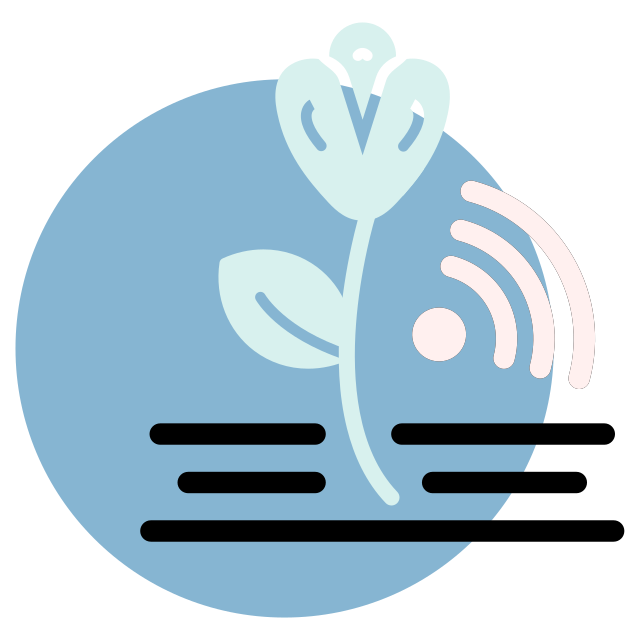
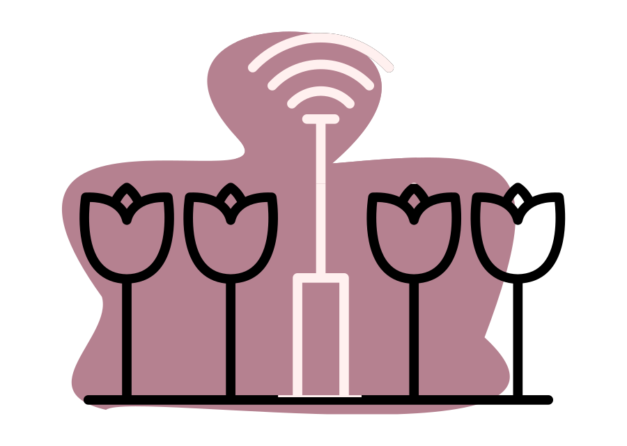
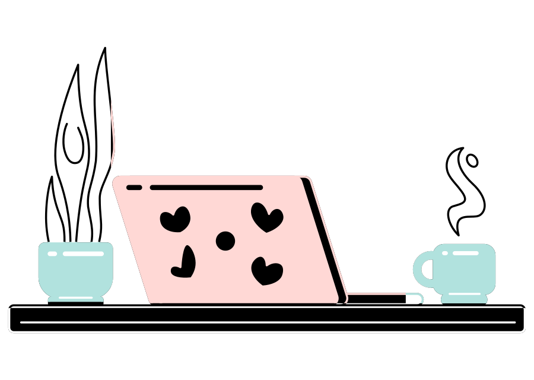

Cover Letter
My journey into software engineeringI didn't take a traditional path into software engineering. I started as an opera singer, managing digital pages, events, and communities for music projects.
The journey
What began as updating websites during the pandemic turned into a deeper curiosity: how does the code behind the page actually work? That question led me to SEO, web architecture, and eventually to building full-stack applications myself.
Programming became the place where my creative and analytical sides finally came together. My background in music taught me discipline, attention to detail, and how to approach complex systems—whether it's a musical score or a codebase. Digital communications taught me to think from the user's perspective. Today, I combine both experiences to build software that is logical, organized, and intentionally designed.

What I bring
| Systems thinking |
 User-centered craftsmanship |
Continuous learning | Planning as a strength |
|---|---|---|---|
| I enjoy breaking down complex problems through structured analysis. From developing REST APIs during Laboratoria to planning digital strategies for small businesses, I naturally look for patterns, edge cases, and clean solutions. | Good code isn't enough if it doesn't serve people. I strive to balance technical quality with thoughtful user experiences, shaped by my background in branding and creative communication. | I am currently pursuing a Bachelor of Science in Software Engineering at Western Governors University after completing Laboratoria's Full-Stack Web Development Bootcamp and earning a Java Developer Certificate. I learn best by building, experimenting, and continuously improving my skills. | I'm a collector of languages, workflows, and planning systems. That interest is reflected in how I organize projects, document decisions, and create structured processes for learning and collaboration. |


I believe the best software comes from combining technical knowledge with curiosity, creativity, and careful execution.
As I continue growing as a software engineer, I look forward to contributing to meaningful projects, learning from experienced teams, and building solutions that are both reliable and enjoyable to use.
Etelbina Cañedo